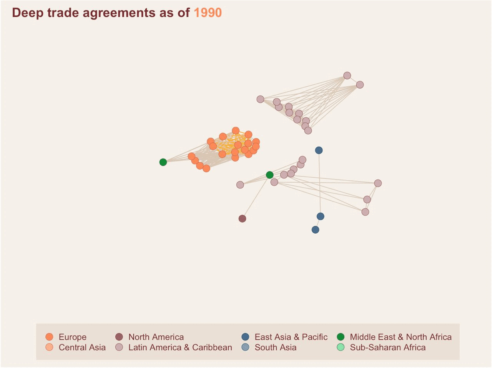

Trade Agreements As Social Networks
I explore the dynamics of deep trade agreement formation using social network analysis concepts – transitivity and homophily.
Human life is surrounded and governed by systems that are “hopelessly complicated” 1. Our brain functions are determined by billions of interconnected neurons. How we talk and understand language is based on complex relationships between millions of words. The activities we conduct on our cell phones are determined by an elaborate interaction between thousands of computers and satellites.
These complex systems are notoriously hard to understand, but they all have underlying networks that determine how pieces in the system interact. Network science is a relatively new discipline that aims to understand complex systems by studying their elements and the connections between them.
Relationships between countries and the exchange of goods and services across borders is an example of a network. Official agreements that countries enter into to facilitate trade and deepen economic cooperation can also be analyzed as a network. In fact, trade agreement formation may actually be better understood through network analysis compared to the more traditional regression-based gravity model. This is because network analysis is able to capture one important fact: the relationship between two countries is also influenced by their relationship with other nations.
In this study, I explored the dynamics of a particular set of free trade agreements – deep FTAs – and found that their creation is actually quite similar to how we make social connections. The social network concepts of transitivity and homophily are both observed in deep FTA networks. The phrases “a friend of a friend is a friend” and “birds of a feather flock together” also apply to how countries choose trade partners. In particular, similarities in political institutions attract countries to potentially deep FTA partners.
Deep trade agreements: a new type of cooperation
Before the mid 1990s, FTAs mostly involved provisions for facilitating market access and promoting free trade. In the last 30 years, newer forms of cooperation have spread and trade agreements have become deeper, making room for provisions outside the scope of the WTO mandate. More recent agreements cover regulatory standards, intellectual property rights, environment, and migration rules, among other issues. Such trade deals are referred to as deep trade agreements.
As an example, let’s compare two trade agreements of the European Union, signed a decade apart. The EU-Israel Free Trade Agreement came into force in 2000 and was one of the Union’s first FTA outside of Europe. The main text is only around 8,0002 words long and focuses on free movement of goods, specifically on prohibiting quantitative restrictions and customs duties on different types of products. Meanwhile, the EU-Republic of Korea FTA, the Union’s first trade deal with an Asian economy which came into effect in 2011, is around 47,0003 words long. It covers non-conventional trade topics such as competition policy, e-commerce, gender, and SMEs.
Deep trade agreements can potentially result in welfare gains for participating economies. Given their recent spread and apparent benefits, it has become important to understand how and why these types of agreements are formed. I used network analysis to model deep trade agreement creation, in an effort to identify factors that determine the choice of partnerships in extensive trade deals and how they differ from more traditional FTAs.
Network of trade agreements
The network below illustrates the evolution of trade agreements over the last three decades. Countries are represented as nodes, with colors corresponding to broad geographical regions. A link or edge between two nodes exist if there is a FTA between a them. Colored links are deep trade agreements. It’s clear that the network became denser over the years (as more countries signed trade deals), and deep FTAs became increasingly common, even between countries belonging to different regions.

This World Bank paper presents various ways to define and measure depth of agreements. For this analysis, I focused on deep trade agreements that contain at least one legally binding non-economic policy4 or one of the provisions below:
- Environmental laws
- Audiovisual cooperation
- Cultural cooperation
- Health
- Human rights
- Illicit drugs
- Money laundering
- Political dialogue
- Terrorism
Depth is defined as the number of (legally enforceable) provisions present in the text of the agreement. Information on FTA depth is also supplemented by other country-level data that can be used to understand the dynamics of trade agreement formation. Each node is assigned a set of variables or factors that may affect the choice of partners. The table below summarizes the variables used for the analysis:
| Variable | Values | Source | |
| 1 | Broad geographic region | Europe, North America, Latin America and Caribbean, East Asia and Pacific, Central Asia, South Asia, Middle East and North Africa, Sub-Saharan Africa | World Bank |
| 2 | Income classification | Low income, lower middle income, upper middle income, high income | World Bank |
| 3 | Political freedom | Free, partially free, not free | Freedom House Democracy Index |
More details about the sources, features, and process of creating the network dataset can be found in this this post.
A common descriptive measure in network analysis is node degree. This is a measure of how many direct connections a node has. In the trade agreements network, the degree measures the number of agreements a country has with other economies5.

One interesting relationship to look at is the correlation between the degree of a node and its average depth – the number of bilateral agreements a country has and how deep these agreements are, on average. The figure below shows a positive correlation between node degree and depth, an indication that well-connected countries are also more likely to sign deep trade agreements.

Trade agreement formation and the exponential random graph model
There are ways to empirically test factors that influence trade agreement formation. One of which is the exponential random graph model. ERG is a method in network analysis used to determine the probability of observing a set of links. The model can be used to study how similarities in node attributes influence the presence or absence of FTA links6. Fitting an ERG model is analogous to regression analysis for network data. It provides coefficients that measure the likelihood of a link between two countries existing, given a certain feature.
The figure below shows the results of ERG models fitted to (1) the full trade network – including both traditional & deep FTAs – and (2) the deep trade network only. The variables on the y-axis are the node features of interest. If the ERG coefficient is positive, a connection is likely if two countries have similar features. If the coefficient is negative, a connection is unlikely if two countries have similar features.

There are three key takeaways from these results:
Transitivity plays a key role in trade agreement formation. If countries A and B both have bilateral agreements with country C, it is 50%7 more likely that A and B will also sign a FTA with each other, compared to a scenario where their common connection with C does not exist.
Political freedom is the most important determinant of deep trade agreement formation. The likelihood of a deep FTA between two countries that are both politically free (i.e. democracies) is 91% higher than two countries where only one or none is considered free8. In contrast, region is the most important factor in the full trade network9.
Deep trade agreements are more likely to form between countries with different income classes. Economies belonging to the same class are 62% less likely to form deep FTAs compared to countries that are from different income classes.
In general, this analysis supports the idea that deep trade agreements are less concerned about trade creation but rather prioritize cultivating relationships and strengthening international cooperation. Countries that sign deep FTAs do so for reasons extending beyond economic gains. Factors such as geographical location and income levels are not as important as the political profiles of potential partners. Beyond increasing the volume of trade between economies, the appeal of deep FTAs lies in social and political benefits.
Footnotes
Albert-László Barabási in Network Science.↩︎
The main text, including the title and signature pages, is 8,186 words long. The document can be accessed here.↩︎
The main text, including the title and signature pages, is 47,505 words long. The document can be accessed here.↩︎
Non-economic policies are defined in this paper.↩︎
If a country belongs to a multiparty agreement (e.g. ASEAN), each bilateral partnership (e.g. Singapore-Philippines, Singapore-Malaysia, Singapore-Thailand) is counted as one connection.↩︎
The application of this method to trade agreements was first explored in this publication.↩︎
Log-odds ratios expressed as a probabilities↩︎
In the full network, a country pair being both democracies only makes it 60% more likely for a FTA to form.↩︎
A trade agreement between two countries in the same region is 92% more likely than between countries from different region. In the deep trade network, belonging to the same region only makes in 82% more likely for a FTA to form.↩︎